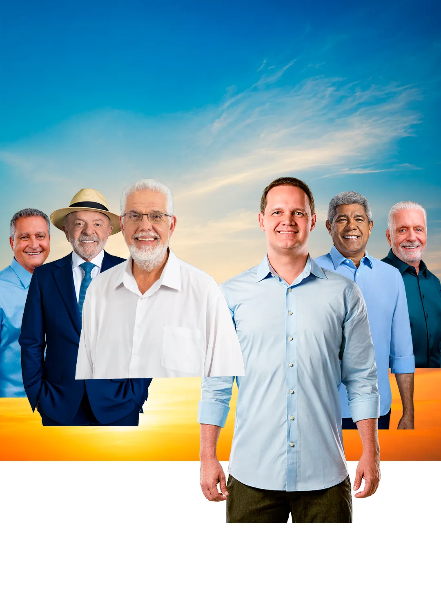
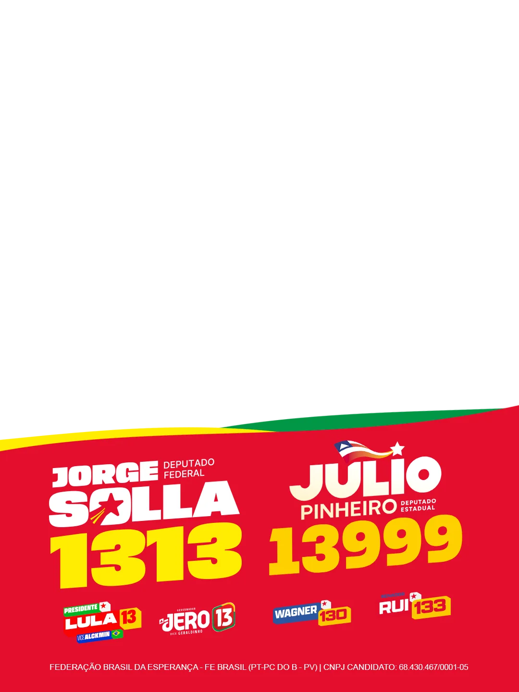

Time do estadual
Confira seu card
O recorte já foi centralizado. Se precisar, arraste a foto ou use os controles.


O arquivo transparente trava enquanto a pessoa ainda aparece perto do centro.
A pessoa já saiu quase toda pelo alto e pela direita. A arte de trás reaparece.
Ajuste fino